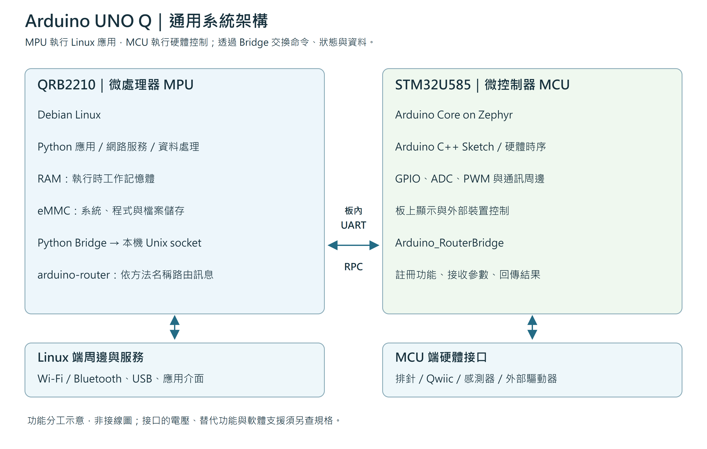
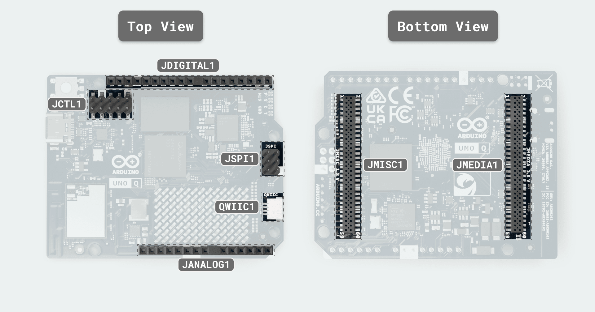
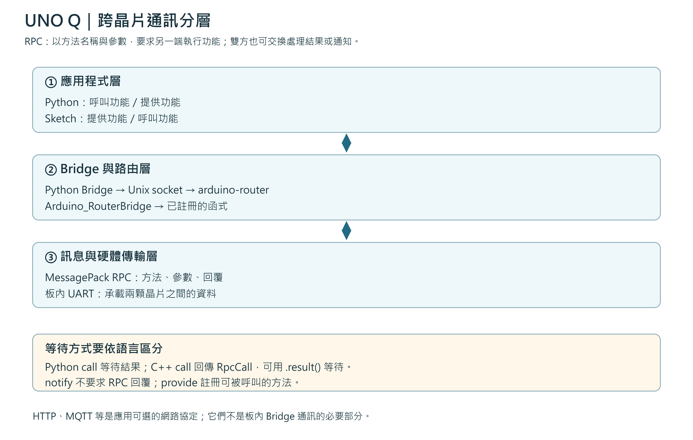
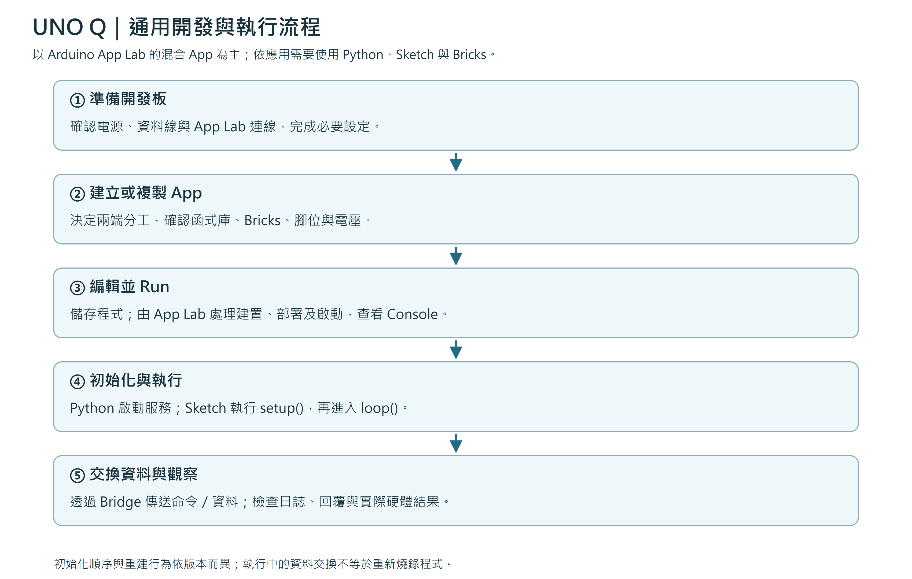
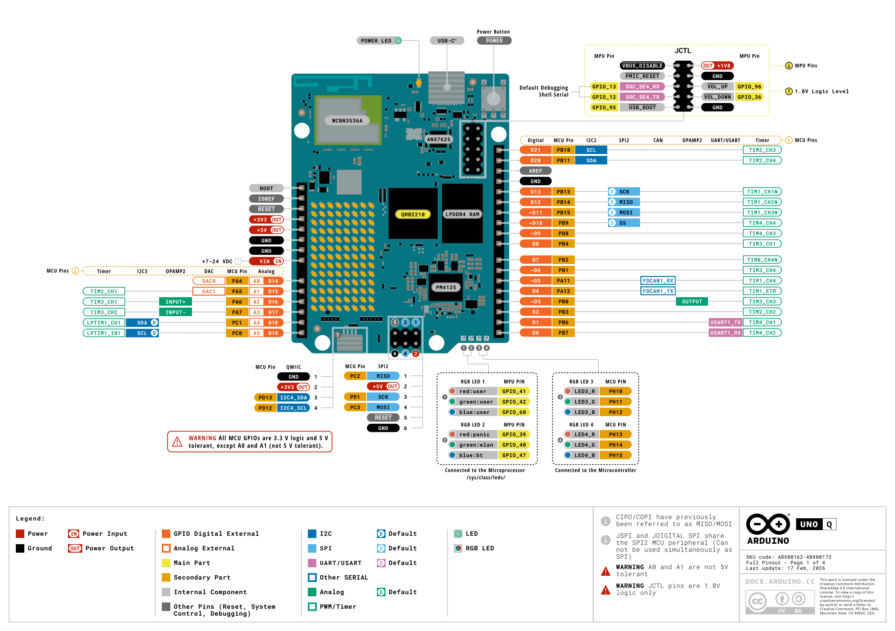
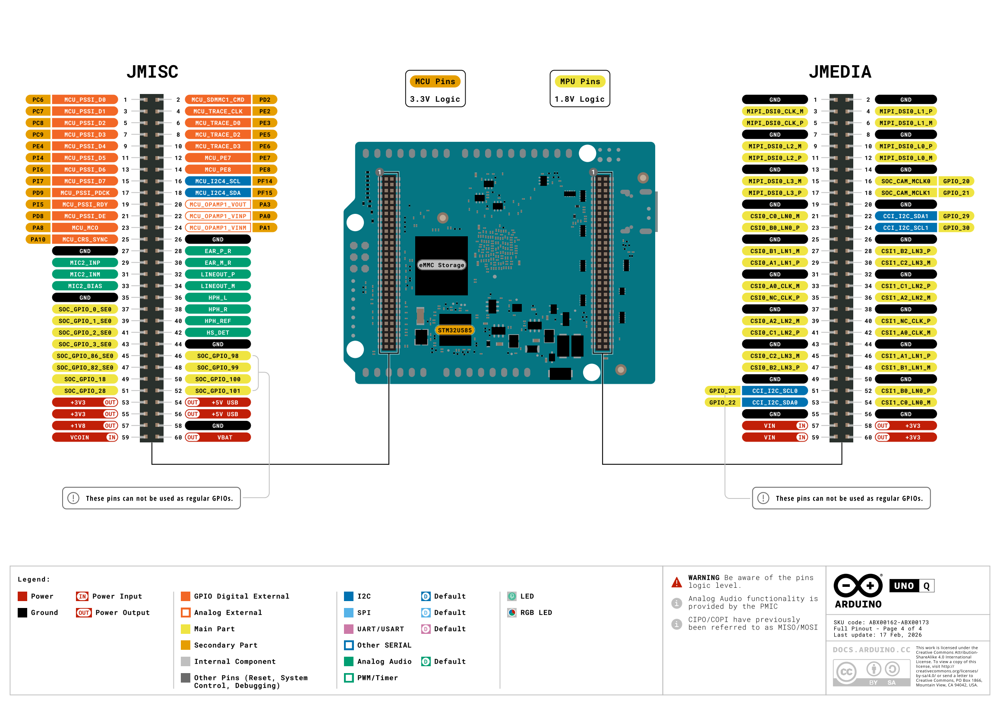

本文件整理 UNO Q 的系統架構、開發方式、跨晶片通訊、腳位與使用限制，不限定特定範例。開發流程以 Arduino App Lab 為主；其他工具與進階系統設定另依官方文件操作。
UNO Q 結合 QRB2210 微處理器（MPU）與 STM32U585 微控制器（MCU）。MPU 執行 Linux 應用與資料處理；MCU 執行 Arduino Sketch 與硬體控制。兩端可透過 Bridge 交換命令、資料與結果。
| 項目 | MPU：QRB2210 | MCU：STM32U585 |
|---|---|---|
| 執行環境 | Debian Linux | Arduino Core on Zephyr |
| 常見程式 | Python、Linux 應用 | Arduino C++ Sketch |
| 適合工作 | 網路、檔案、資料庫、影像與應用邏輯 | GPIO、ADC、PWM、感測器與硬體時序 |
| 資料保存 | 可使用 Linux 檔案系統與資料庫 | 依程式與儲存設計處理；RAM 不作斷電保存 |
| 合作方式 | 提出要求、處理回傳資料，也可提供功能 | 執行硬體操作、回傳狀態，也可發起呼叫 |
RAM 用於執行中的工作資料；eMMC 保存 Linux 系統、程式與檔案。容量依板卡版本不同。網頁介面是選用功能：瀏覽器 JavaScript 在開啟網頁的裝置上執行，伺服器可在 UNO Q 的 Linux 端執行。

圖 1：UNO Q 雙晶片功能架構。圖中為一般分工方式，不表示所有周邊都只能透過單一路徑存取。
| 元件／接口 | 用途 | 備忘 |
|---|---|---|
| USB-C | 供電、USB 資料與相容的顯示連接 | 功能受線材、配件與設定影響 |
| Wi-Fi／Bluetooth | 無線連線 | 由 Linux 端服務與應用使用 |
| RAM／eMMC | 工作記憶體／系統與檔案儲存 | 兩者用途不同 |
| JDIGITAL／JANALOG | 數位、類比、電源與控制排針 | 同一腳位可能有多種替代功能 |
| Qwiic | 3.3 V I²C 模組接口 | 確認模組位址與電壓 |
| JSPI | SPI 與相關電源／控制腳位 | SPI 訊號與供電電壓須分開看 |
| JCTL | MPU 控制與除錯 | 1.8 V 邏輯，非一般 3.3 V 接口 |
| JMISC／JMEDIA | 背面進階擴充 | 混合訊號與電壓域，須逐腳核對 |
| RGB LED／8 × 13 點陣 | 狀態與視覺輸出 | 控制端與 API 依元件而異 |

圖 2：板上接口位置。接線時再對照圖 5、圖 6 的逐腳標示。
以下為常見 App 結構；不是每個 App 都需要全部檔案。
| 位置 | 功能 | 修改時機 |
|---|---|---|
| app.yaml | App 資訊與 Bricks 等設定 | 調整功能模組與應用設定 |
| python/main.py | Python 入口與應用邏輯 | 修改資料處理、服務與 Bridge 呼叫 |
| sketch/sketch.ino | MCU 初始化與硬體控制 | 修改腳位操作或 MCU 功能 |
| sketch/sketch.yaml | Sketch 建置設定 | 調整平台或函式庫依賴 |
| assets/（選用） | 網頁 HTML、CSS、JavaScript | 修改網頁內容、外觀與互動 |
| 其他模組（選用） | 資料庫、轉換或特定功能 | 依 App 設計新增；名稱不固定 |
Bricks 是可整合進 App 的功能模組。使用某個 Brick 並不代表每個 App 都必須具有網頁、資料庫或 AI 模型。
建議流程：確認電源與連線 → 建立或複製 App → 規劃兩端分工 → 編輯 → Run → 查看 Console → 驗證實際結果。修改 Python 後重新啟動 App；修改 Sketch 後需建置與部署；修改網頁後也重新整理瀏覽器。執行中的命令或資料交換不等於重新燒錄。
| 名稱 | 作用 |
|---|---|
| Bridge API | 提供呼叫、註冊與通知介面 |
| arduino-router | Linux 路由服務，依方法名稱轉送訊息 |
| Unix socket | Python Bridge 連到本機路由服務的通道 |
| MessagePack RPC | 封裝方法名稱、參數、回覆與錯誤 |
| 板內 UART | 承載 MPU 與 MCU 之間的通訊 |
| HTTP／MQTT 等 | 依需求選用的網路協定，不是 Bridge 的必要部分 |

圖 3：Bridge 的應用介面、路由與硬體通道。板內 UART 無須用外部 D0／D1 跳線連接。
| API | 意義 | 注意事項 |
|---|---|---|
| provide | 註冊可被呼叫的功能 | 名稱、參數與型別須與呼叫端一致 |
| Python call | 呼叫並等待結果或錯誤 | 規劃逾時與例外處理 |
| C++ call | 回傳非同步 RpcCall | 可用 .result() 等待並取得結果 |
| notify | 發送不要求 RPC 回覆的通知 | 無法僅憑發送完成確認遠端操作成功 |
雙方應先約定：方法名稱、資料型別、單位、有效範圍、回傳值、更新頻率、逾時與失敗處理。傳送「需要的資料」即可，不應假設所有應用都傳固定長度陣列或 JSON。RPC 完成回覆也不等於外部硬體動作已被量測確認。

圖 4：App Lab 通用開發流程。實際初始化順序與重建行為依 App、版本與快取而異。
| 現象 | 優先檢查 |
|---|---|
| 找不到開發板 | 電源、可傳資料的 USB 線、網路與 App Lab 連線 |
| App 建置失敗 | Console 第一個實際錯誤、函式庫與設定 |
| Python 停止 | Python 日誌、依賴、例外與啟動設定 |
| Bridge 找不到方法 | 兩端是否啟動、provide 名稱、是否部署了最新 Sketch |
| Bridge 逾時 | 對端是否阻塞、通訊狀態、要求頻率與回呼設計 |
| 通訊正常但硬體沒動作 | 腳位對應、模式、電壓、驅動器、接地與外部電源 |
| 資料不合理 | 單位、範圍、陣列長度、排列方式與校正 |
| 間歇重啟 | 電源能力、線材壓降、負載與軟體日誌 |
診斷時記錄「送出什麼、收到什麼、何時發生」，再與硬體結果對照。MCU 回呼與主迴圈可能在不同執行緒運作，共用資料需要同步；不要在回呼中任意加入相互等待的跨晶片呼叫。

圖 5：Arduino 官方正面完整 Pinout，版本日期 2026-02-17。保留原始標示與署名，建議以整頁寬度插入。
| 功能 | 腳位／接口 | 備忘 |
|---|---|---|
| 數位 I/O | D0～D13 等 MCU 腳位 | 確認 pinMode 與替代功能 |
| ADC 類比輸入 | A0～A5 | 對應 D14～D19 是同一組實體腳位的別名 |
| PWM | ~D3、~D5、~D6、~D9、~D10、~D11 | PWM 脈波不等於 DAC |
| UART | D0 RX、D1 TX | 外部序列通訊；不同於板內 Bridge UART |
| I²C2 | D20 SDA、D21 SCL | 獨立確認軟體匯流排物件 |
| I²C3 | A4 SDA、A5 SCL | 不是 D20／D21 的同一對實體線 |
| I²C4 | Qwiic | 3.3 V 模組接口 |
| SPI2 | D10 SS、D11 MOSI、D12 MISO、D13 SCK；另有 JSPI | 兩組排針共用 SPI2 周邊，不能當成兩組獨立 SPI |
| CAN 控制訊號 | D4 TX、D5 RX | 需要外部 CAN 收發器 |
| DAC 替代功能 | A0 DAC0、A1 DAC1 | 確認所用核心與 API 支援 |
Pinout 的 Analog 標示包含類比腳位名稱與其他類比功能；綠色可用於 OPAMP 等類比功能標記。顏色不是電壓規格。腳位列出替代功能，也不代表所有功能都能同時使用或已有高階函式庫支援。

圖 6：官方背面進階腳位。原 PDF 將此區列為進階用途，部分功能可能尚未獲 Arduino 軟體正式支援；不可只依接口外觀接線。
| 項目 | 使用限制 |
|---|---|
| USB-C | 官方建議穩定的 5 V／3 A 電源與相容線材 |
| VIN | 7～24 V 電源輸入，不是訊號腳 |
| MCU 一般 I/O | 3.3 V 邏輯；5 V 電源腳不代表 5 V 訊號輸出 |
| ADC | 有效輸入範圍依 VREF+，本板約 0～3.3 V |
| A0／A1 | 不耐受 5 V |
| 其他類比輸入 | 不能沿用數位模式的 5 V 耐受條件 |
| I²C／Qwiic | 確認 3.3 V 模組與上拉電壓 |
| JCTL／進階擴充 | 存在 1.8 V 訊號域，逐腳確認，不可直接施加 3.3 V |
| GPIO 負載 | 核對單腳、埠與晶片總電流；馬達等用驅動器 |
| 外接模組電源 | 計算板上與外部共同負載；非隔離訊號通常需共地 |
AREF、RESET、BOOT 與系統控制腳位不是一般 GPIO，依官方用途操作。跨電壓域應使用適合的電位轉換或訊號調理電路；電源電壓、邏輯電壓與 ADC 量測範圍必須分開判斷。
- 板卡與規格：https://docs.arduino.cc/hardware/uno-q/
- 完整 Pinout：https://docs.arduino.cc/resources/pinouts/ABX00162-full-pinout.pdf
- 電源規格：https://docs.arduino.cc/tutorials/uno-q/power-specification/
- App Lab：https://docs.arduino.cc/software/app-lab/getting-started/quickstart/
- C++ Bridge：https://github.com/arduino-libraries/Arduino_RouterBridge
- Python Bridge：https://github.com/arduino/app-bricks-py/blob/main/src/arduino/app_utils/bridge.py
- 路由服務：https://github.com/arduino/arduino-router
整理日期：2026-09-12。這是文件與原始碼查核整理，非所有接口的實機驗證報告。腳位替代功能與函式庫可用性須以實際安裝版本確認。圖 1、3、4 為自製通用示意；圖 2 沿用官方接口圖，圖 5、6 沿用官方 Pinout 頁面。完整 Pinout 授權為 CC BY-SA 4.0，已保留署名與原 PDF；圖 6 使用時應保留進階限制圖說。